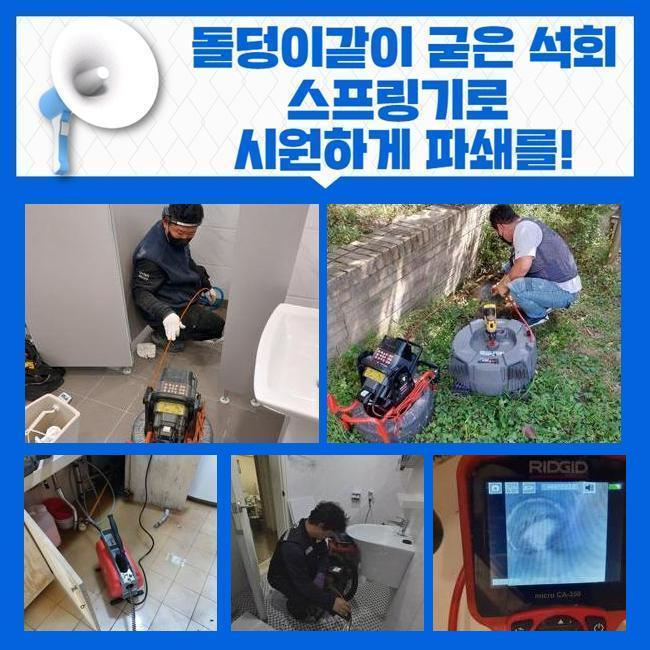
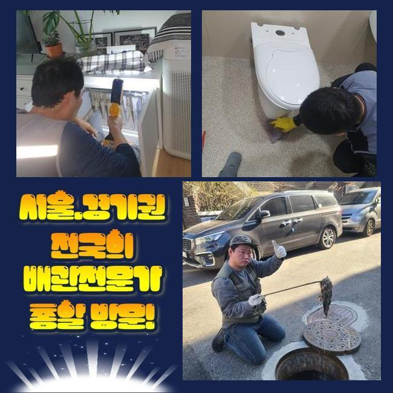
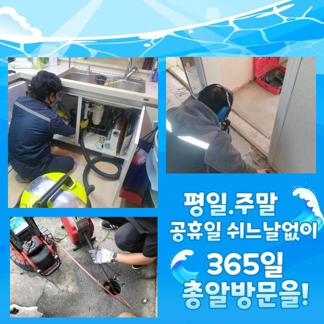
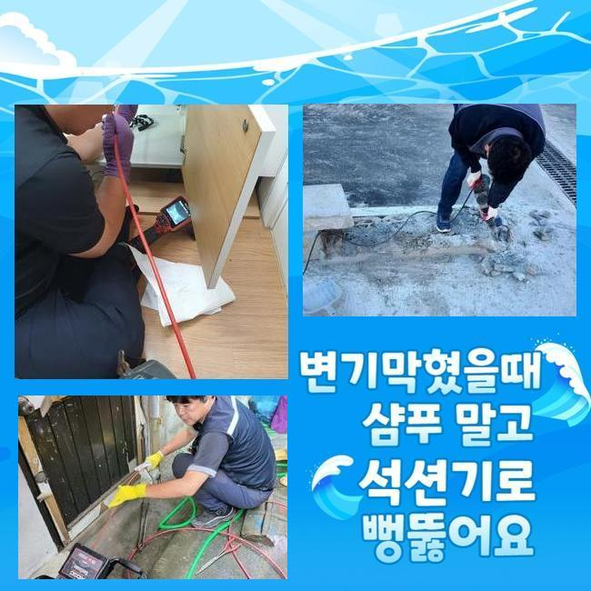
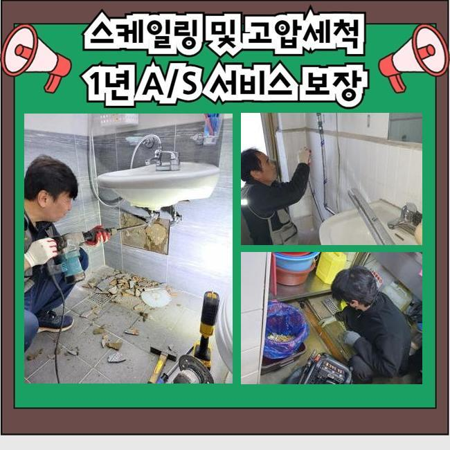
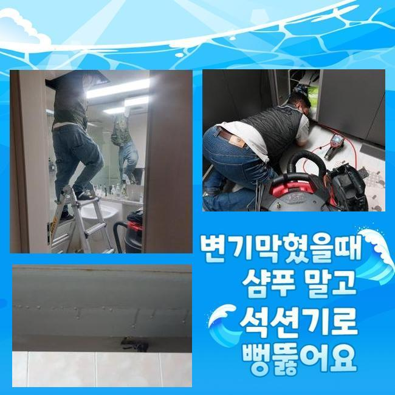
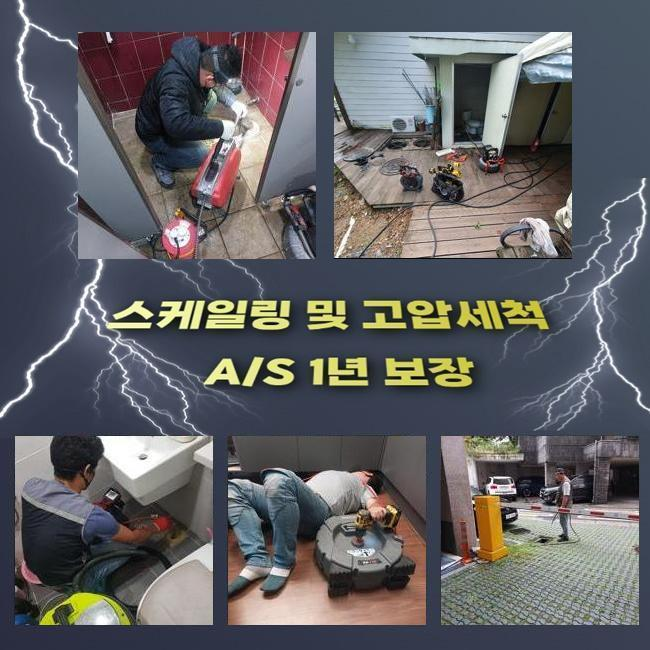

🏠 인천 화평동싱크대배수구역류 금창동 집수정청소 설비출장
인천 싱크대막힘 전문 시공 후기

📋 작업 개요
- 위치: 인천
- 서비스 유형: 싱크대막힘, 하수구막힘, 배관막힘, 집수정막힘, 역류해결, 뚫는업체, 배관청소, 고압세척, 설비공사
- 작업 일시: 2024. 10. 25. 13:42
- 업체명: 하수구수사대 (010-5615-2118)
🔍 문제 상황
인천 화평동싱크대배수구역류 금창동 집수정청소 설비출장
엊그제는 하수관 막힘으로 한 음식점에서 의뢰를 주셨어요
주방싱크와 바닥부분 배수관 둘 다 물이 순조롭게 흐르지 않으니 하수구스케일링을 전체적으로 받고 싶은데 가능하냐구요
장소를 물어본 후 길찾기 앱에 검색해 방문 예정 시간을 알려드렸습니다
저희가 있는 장소에서 금방 갈 수 있는 음식점이었어요
치킨집이나 음식점에서는 자주 나타나는 오일 덩어리가 생기므로 배수관 스케일링을 일정간격으로 의뢰주시는 경우 또한 여럿 존재하므로 기기와 자재들을 챙긴다음 바로 출발하였습니다
배수관 막힘으로 의뢰 주신 지점에 내방하여 요리실로 이동하니 예상한 것 보다 큰 문제로 보였습니다

🔎 원인 분석
💡 전문가 진단: 정밀 진단 장비를 사용하여 슬러지의 고착 여부를 판명하고 타격/세척 작업을 실시했습니다.
검게 부패한 기름 찌꺼기가 거꾸로 나와서 식당에서 고약한냄새가 퍼지고 있었고 바닥면과 벽까지도 지저분하게 된 상태였어요
의뢰인께서는 설거지대 후면부에 감춰져 있는 하수관 고장으로 물이 순조롭게 흐르지 않는다고 예상만할뿐 설거지대를 빼서 상태를 보지 못했다 보니 위급한 상황임을 인지하지 못하셨습니다
이 경우 배수관 안의 문제를 육안으로 살펴보지 못하기에 더 발빠른 대응이 필요해요
하수관 안쪽을 관찰하려 했으나 찌꺼기가 흘러나온 지점에서는 내시경장치를 넣을 수 없어서 구멍 낸 후 속안을 파악하기 위해 하수관로의 한 지점을 절단해보았습니다
이 같이 배수관의 상황을 눈으로 살펴볼 수 있었어요
배수관 속은 기름 덩어리로 꽉 차 있었고 속에 바위처럼 굳어져 내시경기구를 배치할 자리조차 없어보였습니다
이건 오일류와 음식 찌꺼기가 오랫동안 하수파이프에 쌓여 기름 덩어리를 형성한 결과입니다
배수로가 기름 찌꺼기로 막힌 다면 물이 빠지는게 상당히 느려지면서 나쁜냄새와 물 솟구침을 유발하게 됩니다 이런 이유로 하수관로를 완벽하게 세정하여 사태를 해결해드리고 있습니다

🔧 작업 과정
이런 정도라면 지금껏 매장 영업을 제대로 못 했을 것 같아 여쭤봤더니 예상했던대로 이곳은 아예 이용조차 안하시고 있었다고 이야기 했어요
하수가 전혀 빠지질 않아서 배관에 문저희가 있는 걸 알고있었지만 직접 몇 번 뚫어보신 후에도 물 배출이 전혀 이뤄지지 않자 시간 여유도 없고 해서 그냥 내팽겨쳐 버린 듯 했어요
속안을 내시경기계를 관찰해보니 예상한대로 새까맣게 변질되고 돌처럼 굳어져버린 기름 슬러지로 인해서 배수관이 꽉 막혀있는 상태였으며 배관 안 공간이 조금도 확인되지 않는 상태였어요
이런 상황이면 배관을 유지하기가 무리일 것 같아 구멍을 낸 후 점검을 진행했던 작업 지점은 하수파이프를 아예 신규 배관으로 교체해 드린 후 모든 배관은 하수가 흐를 수 있을 때까지 하수구스케일링을 진행하는 것으로 계획을 세웠어요
플렉스샤프트 기구를 진입시켜 배수로 안을 꽉 채운 기름 슬러지를 부숴내는데 오염물이 굉장히 많이 쏟아져나왔습니다
한동안 실시한 뒤 마침내 물의 흐름을 점검할 수 있었습니다 그간 빠지지 못하고 부패한 물이 엄청나게 흘러나오기 시작했어요
배관 청소가 완료된 다음에는 하수관 냄새나 역류문제도 사라질 것이라고 이야기해드렸더니 매우 만족해하셨어요
찌꺼기가 급격히 터져나오고 난 이후에도 멈추지 않고 하수관로 청소를 위해 플렉스샤프트 장치를 가동시켰고 끊임없이 배출될 것만 같던 오염물은 어느덧 수량이 적어졌더라구요
좌우 배관 전부 세척을 처리한 후에 새로운 배수로를 연결하려고 정확한 길이로 다듬는 단계를 진행했어요
뚫어놨던 양방향 하수파이프를 전부 다듬어 놓고 빈틈없이 길이를 맞춰 배수로를 커팅해주었고요 정확히 맞춰 끼워넣는 일은 수평측정기를 사용해서 물이 잘 통할 수 있도록 연결시켜야 하기에 상당히 세심한 주의가 필요한 과정입니다
기존 배수관과 똑같이 연결한 다음 원래있던 하수관로 속안을 살펴 본 결과 빈 곳이 너무 비좁은 모습으로 매우 불편했던 그때의 상황들을 떠올리게 했습니다
고객의 배수로 조건에 맞게 청소를 마무리한 뒤 동시에 새 하수관로 교체 공사까지 흠잡을데 없이 처리하는 것은 웬만한 전문가가 하기엔 힘든일이죠


✅ 작업 완료
구멍을 뚫은 후 배수관 안쪽 환경에 맞춰 플렉스 샤프트기로 배수관 스케일링을 통해 불순물을 완벽히 청소해 내 하수관세척을 마무리짓고 세정을 할 수 없던 부분의 경우 새로운 배수로로 교체 공사를 해서 배수가 원활히 되었는지 테스트한 후 모두 마무리해 드렸어요
기름 슬러지 문제 배수설비 및 하수구 막힘 문제 등은 각자의 조건에 맞추어 올바른 방안을 제공하는 전문팀에게 의뢰하셔서 성공적인 결과 받아 보시기 바래요
막힘이 발생하면 저희 전문가들에게 곧바로 전화를 주셔서 확실히 수리하시길 추천드립니다




⚠️ 주방 싱크대 배관 막힘 예방 수칙
- ✅ 기름기가 묻은 식기나 프라이팬은 설거지 전 키친타올로 반드시 기름때를 닦아내세요.
- ✅ 주기적으로 싱크대 개수대에 뜨거운 물을 가득 받아 한 번에 내려 배관 내부 기름을 씻어내세요.
- ✅ 배수구 거름망을 미세한 필터로 사용하시고 음식물 찌꺼기가 틈으로 새어 들지 않게 관리하세요.
- ✅ 베이킹소다와 식초를 뜨거운 물과 함께 일주일에 한 번씩 부어주면 배관 살균과 막힘 예방에 좋습니다.
💡 핵심 정리
- 확실한 장비 작업(내시경 점검 및 샤프트 스케일링)으로 원인을 뿌리 뽑습니다.
- 작업 후 1년 이내에 동일한 부위 재발 시 100% 무상 A/S 서비스를 보장합니다.
- 서울 · 경기 · 인천 전 지역에 24시간 언제든 긴급 출동할 수 있도록 항시 대기 중입니다.
❓ 자주 묻는 질문 (FAQ)
🚨 인천 싱크대막힘 문제로 고민이신가요?
정확한 원인 진단과 확실한 시공으로 재발 없는 해결을 약속드립니다.
24시간 긴급 출동 | 서울 · 경기 · 인천 전지역 | 1년 내 재발 시 무상 A/S